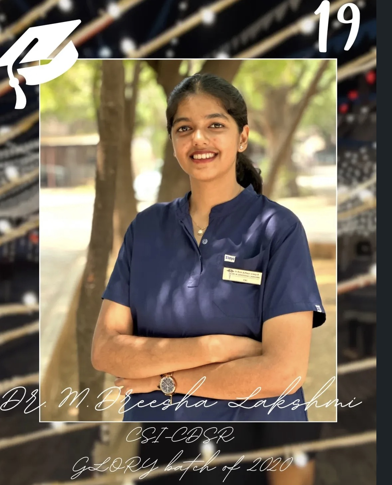

✎
Chapter 01 · The roots
Where curiosity grew
Biology, colour pencils, and the people who believed in her long before the white coat.
Open this chapter ↗For the colours you brought, the smiles you helped create, and the people who continue to be inspired by you.
Come in. There are stories tucked everywhere.

Wander through the memories, meet the little things that shaped her, and leave a little happier than you arrived.
Biology, colour pencils, and the people who believed in her long before the white coat.
Open this chapter ↗New experiences, competitions, and the confidence that grows by trying.
Follow the path ↗A miniature dental world with one tooth that could use a little help.
Play the game ↗“From colour pencils to dental instruments, the artist and the dentist were never really separate.”
A thought at the heart of Dreesha's story
Family, teachers, friends, juniors, seniors, and the patients whose smiles made the work matter. There is a little room for all of them here.